### {{ page.title }}
---
### DNase hypersensitivity
---
### ATAC-seq experiment
---
### Tn5 Transposase
---
### ChIP-seq vs ATAC-seq
#### ChIP-seq
- uses an antibody
- selects a specific factor
- identifies fragments
#### ATAC-seq
- no antibody
- all factors
- identifies nucleotides
---
### Review of basic algorithm for sequence-based genome data
flowchart LR
Sequences --> Alignment --> Counting --> x[Peak calling] --> Summary
---
---
---
---
### ATAC-seq peak calling
F-seq uses kernel density estimation: [Boyle et al. 2007](https://doi.org/10.1093/bioinformatics/btn480)
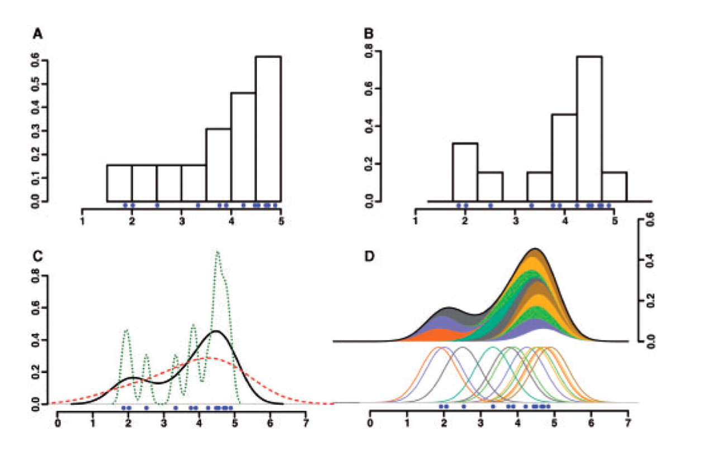
---
### QC metrics for ATAC-seq
- TSS enrichment score
- Fragment distribution
---
### TSS enrichment score
1. Collect a reference set of TSSs
2. Aggregate reads 2000 bp around TSSs
3. Tile into 100 bp windows.
$ S_{TSS} = \frac{ TSS }{ background } $
---
### Fragment distribution
---
### Biological questions for chromatin analysis
- What regions are specific to cell-type $x$?
- How do they change during differentiation?
- What genetic variation affects accessibility?
How can we compare samples?
---
## Harmonization
> Transforming data so as to make them more comparable
1. Normalizing to an independent reference.
2. Normalizing two or more datasets to each other.
The approach depends on the data.
---
## Harmonization approaches
- Mapping/projection
- Scaling (z-score, minmax, quantile)
- Trimming, Clip functions
- Filtering
---
### How can you compare two samples?
Potential issues:
1. Peak locations differ across samples
2. Sequencing depth differs
3. Sequences are relative to the available pool
4. CNVs, repeats, NuMts, and other artifacts
---
### Problem 1
Peak locations differ across samples
Possible solution: Consensus peaks
---
### Consensus peaks 1: Union
Simply merge all the peaks into one.
---
But combining many samples has low resolution
 ---
### Consensus peaks 2: Union-tile
---
### Consensus peaks 2: Union-tile
- Increases resolution
- Increases compute time
- Tile boundaries are artificial and may split meaningful units
---
### Consensus peaks 3: Union-tile
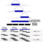
---
### Consensus peaks 4: Algorithm
---
### Consensus peaks 2: Union-tile
---
### Consensus peaks 2: Union-tile
- Increases resolution
- Increases compute time
- Tile boundaries are artificial and may split meaningful units
---
### Consensus peaks 3: Union-tile
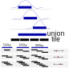
---
### Consensus peaks 4: Algorithm
 ---
You have consensus peaks.
```
chr1 15223 15320
chr2 38252 29502
chr3 3680 4680
```
Now what?
---
You have consensus peaks.
```
chr1 15223 15320
chr2 38252 29502
chr3 3680 4680
```
Now what?
Build a matrix:
```
chr start end s1 s2 s3 s4 s5 ...
chr1 15223 15320 x1 x2 x3 x4 x5 ...
chr2 38252 29502 y1 y2 y3 y4 y5 ...
chr3 3680 4680 z1 z2 z3 z4 z5 ...
```
---
### Peak accessibility matrix
- Peaks are genomic intervals
- Data is: signal track (`.wig`) or aligned reads (`.bam`)
- Extract score for regions ([bigWigAverageOverBed](https://www.encodeproject.org/software/bigwigaverageoverbed/))
Examples of matrix values:
- Number of reads aligned
- Maximum height of signal curve
- Area under the curve (sum of signal curve)
---
### Thought experiment
Say you have 1 core dataset and you want to compare all others in terms of that.
How would you create a peak accessibility matrix?
---
### Problem 2: Sequencing depth
 ---
### RNA-seq RPKM
Reads per Kilobase per Million (RPKM) normalizes to depth and gene length.
1. $ s = \sum{ R } / 1000000 $
2. For each gene, $ e^{scaled}_g = e^{raw}_g / s $.
3. For each gene, $ e_g = e^{raw}_g / l_g $,
where $ l $ is length of the gene (in kb)
- FPKM: Fragments per Kilobase per Million reads
See [Wagner et al. 2012](https://doi.org/10.1007/s12064-012-0162-3) for TPM vs RPKM
---
### ATAC-seq considerations
- Region width (fixed vs variable)
- Raw read counts vs. model signal track
---

---
### Standard normalization (standardization)
$ x' = \frac{x - \mu}{\sigma} $
- Centers: puts data around the mean
- Scales: puts data on the same range
- Result is standard deviations away from the mean
- Doesn't change the shape of a distribution
---
### Min-max normalization
- Sets all data on a scale from 0-1
$ x' = \frac{x-x_{min}}{x_{max}-x_{min}} $
- Makes data interpretable: 1= highly open; 0= closed
- Choose your axis:
```
chr start end s1 s2 s3 s4 s5 ...
chr1 15223 15320 x1 x2 x3 x4 x5 ...
chr2 38252 29502 y1 y2 y3 y4 y5 ...
chr3 3680 4680 z1 z2 z3 z4 z5 ...
```
---
### Quantile normalization
- Goal: to make values comparable to one another
- Assumes sample distributions should be the same. Forces them to look identical
---
### RNA-seq RPKM
Reads per Kilobase per Million (RPKM) normalizes to depth and gene length.
1. $ s = \sum{ R } / 1000000 $
2. For each gene, $ e^{scaled}_g = e^{raw}_g / s $.
3. For each gene, $ e_g = e^{raw}_g / l_g $,
where $ l $ is length of the gene (in kb)
- FPKM: Fragments per Kilobase per Million reads
See [Wagner et al. 2012](https://doi.org/10.1007/s12064-012-0162-3) for TPM vs RPKM
---
### ATAC-seq considerations
- Region width (fixed vs variable)
- Raw read counts vs. model signal track
---

---
### Standard normalization (standardization)
$ x' = \frac{x - \mu}{\sigma} $
- Centers: puts data around the mean
- Scales: puts data on the same range
- Result is standard deviations away from the mean
- Doesn't change the shape of a distribution
---
### Min-max normalization
- Sets all data on a scale from 0-1
$ x' = \frac{x-x_{min}}{x_{max}-x_{min}} $
- Makes data interpretable: 1= highly open; 0= closed
- Choose your axis:
```
chr start end s1 s2 s3 s4 s5 ...
chr1 15223 15320 x1 x2 x3 x4 x5 ...
chr2 38252 29502 y1 y2 y3 y4 y5 ...
chr3 3680 4680 z1 z2 z3 z4 z5 ...
```
---
### Quantile normalization
- Goal: to make values comparable to one another
- Assumes sample distributions should be the same. Forces them to look identical
### Key assumption
Most elements should look similar
when comparing two samples.
---
### Quantile normalization method
Given reference distribution $R$,
1. Rank sample data points $ a_i \in A $,
2. Set the value of $A_r$ to $R_r$, for each rank $r$.
So, the highest $a$ assumes the highest value in $R$, the 2nd highest $a$ assumes the 2nd highest in $R$, *etc.*
$A_1 \rightarrow R_1$
$A_2 \rightarrow R_2$
---
### Quantile normalization in R
```R
> A = c(2, 35, 5, 7, 12, 19, 3)
> B = c(3, 6, 7, 9, 12, 13, 14)
>
> R = apply(cbind(sort(A),sort(B)), 1, mean)
> R # Reference distribution
[1] 2.5 4.5 6.0 8.0 12.0 16.0 24.5
> R[rank(A)] # A normalized
[1] 2.5 24.5 6.0 8.0 12.0 16.0 4.5
> R[rank(B)] # B normalized
[1] 2.5 4.5 6.0 8.0 12.0 16.0 24.5
```
---
## Quantile-Quantile plots
- Base case: visualize normality of a dataset
- Compares observed against theoretical distribution.
- Can also compare two datasets to each other.
---
```R
d1 = rexp(5000, 2)
d2 = rexp(5000, 4)
df = data.frame(val=c(d1, d2),
samp=factor(rep(c(1,2), each=5000)))
ggplot(df, aes(x=val group=samp, color=samp)) +
geom_density() + thm
```
---
```R
res = seq(0,1,by=.001)
ggplot() +
geom_point(aes(x = quantile(d1, res), y = quantile(d2, res))) +
geom_abline(slope=1,intercept = 0)
```
---
```R
R = apply(cbind(sort(d1),sort(d2)), 1, mean)
d1n = R[rank(d1)] # d1 normalized
d2n = R[rank(d2)] # d2 normalized
ggplot() + geom_point(aes(x = quantile(d1n, res), y = quantile(d2n, res))) + theme_minimal() + theme(text = element_text(size = 16)) + geom_abline(slope=1,intercept = 0)
```
---
```R
d1 = rexp(5000, 2)
d2 = rexp(5000, 4)
```
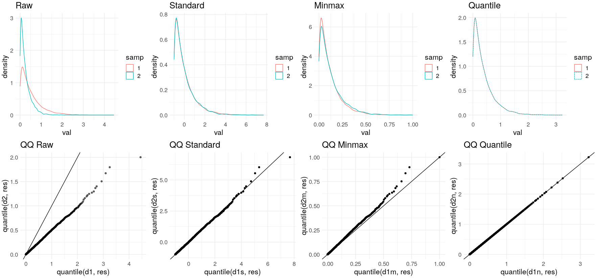
---
```R
d1 = rnorm(5000, 3, 1)
d2 = rnorm(5000, 3, 2)
```
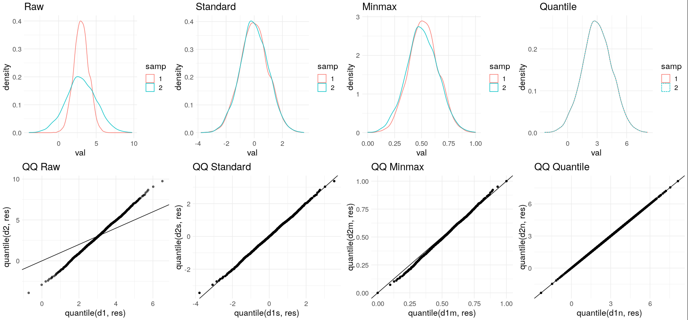
---
```R
d1 = c(rnorm(2000, 2, 1), rnorm(3000, 6, 2))
d2 = rnorm(5000, 3, 2)
```
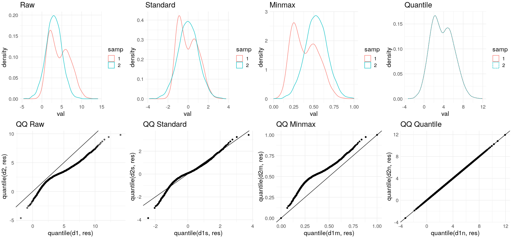
---
```R
d1 = c(rnorm(4995, 3, 2), rnorm(5, 35, 1))
d2 = rnorm(5000, 3, 2)
```
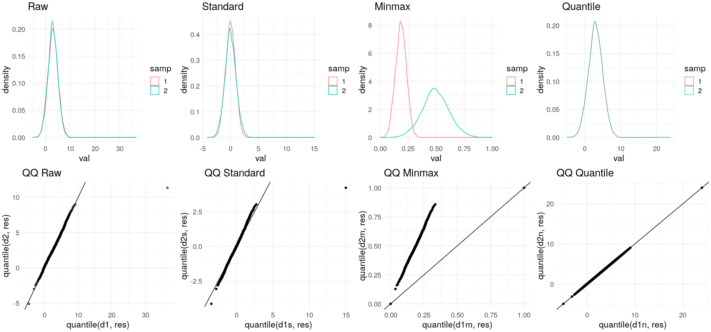
---
```R
d1 = rnorm(5000, 3, 4)
d2 = rexp(5000, 3, 2)
```
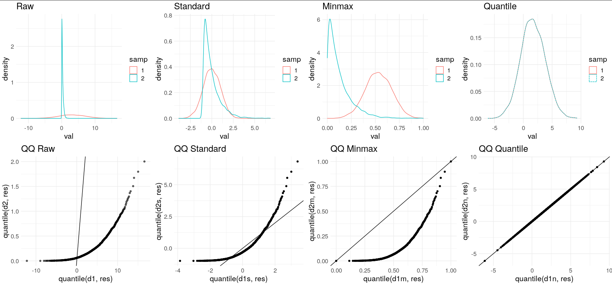
---
```R
d1 = rbinom(5000, 30, .5)
d2 = rpois(5000, 15)
```
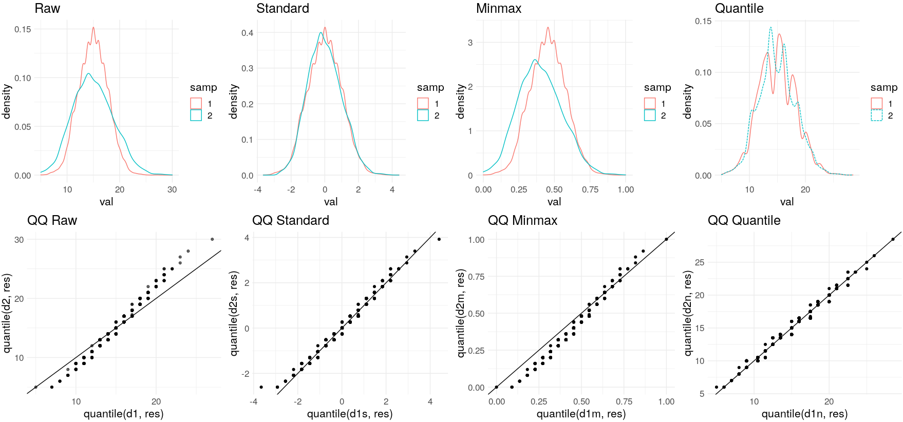
---
### Clip functions
- Handle outliers
$ x = min(x, quantile(x, 0.99)) $
```R
capAndScale = function(x):
cap = quantile(x, 0.99)
x[x>cap] = cap
return x/cap
```
---
## Sequencing real estate
---
## Filters
---
---
---
---
Problems with region masking
Inaccurate alignment statistics
Requires pre-defined NuMt locations
Wastes compute power
---
### Batch effects
Normalization $ \ne $ Batch correction
---
[Leek et al. 2010](https://doi.org/10.1038/nrg2825) says:
> Normalization adjusts global properties of measurements for individual samples so that they can be more appropriately compared.
> Normalization does not remove batch effects, which affect specific subsets of genes and may affect different genes in different ways.
---

---
> We found batch effects for all of these data sets, and substantial percentages (32.1–99.5%) of measured features showed statistically significant associations with processing date, irrespective of biological phenotype (Table 1). This suggests that batch effects influence a large percentage of the measurements from genomic technologies.
---
### Sources of batch effects
- experimental conditions
- different protocols
- different labs
- different technicians
- sequencing equipment
- lane in a sequencer
- day of the week
- reagent lots
---
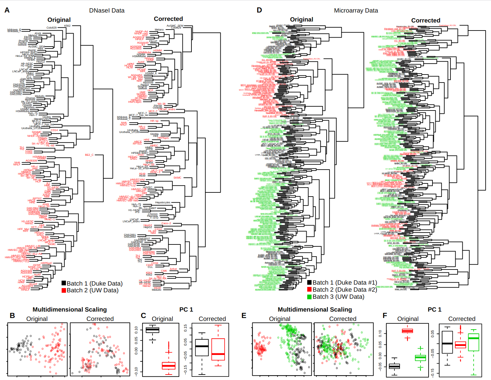
---
### Batch correction approaches
#### Known batches
Known batches → remove effects
#### Unknown batches
Keep biological signal → remove everything else
---
### Known batches
1. Exploratory Data Analysis
- PCA
- Clustering
- Individual feature plots
2. Statistical correction
- [ComBat](https://doi.org/10.1093/nargab/lqaa078)
---

---
### Surrogate Variable Analysis
[Leek and Storey 2007](https://doi.org/10.1371/journal.pgen.0030161)
1. Remove signal of variable of interest from data.
2. Decompose the residual matrix to identify vectors with more variation than expected by chance (permutation test).
---
### Surrogate Variable Analysis
3. Identify the subset of genes driving each vector.
4. For each subset of genes, build a surrogate variable based on the original expression data.
5. Include surrogate variables as covariates in subsequent analyses.
---
### Confounding
Technical batches coincide with biological interest.
*e.g.* controls processed one day, cases another.
---